重构前不是文件太多，是方向反了两处：工具反过来 import features，配置保存又让 approval 反过来 import agent。把这两处掰正，再把 store/utils 这些公共依赖从业务图里拿掉，剩下的形状就是三层单向。

features/tool.js 这个工具宿主可以组装 tools/ 里的特殊工具。工具运行需要审批或保存会话时，由宿主通过 context 传进去，而不是让工具去 import features。
tools/cwd.js → features/history.js 和 tools/subagent.js → features/approval.js。它们和 features/approval.js → features/agent.js 一起，形成了 4 个文件的环。
features/tool.js：它组装 tools/file.js、tools/skill.js、tools/subagent.js。其他工具只依赖 store.js 和 utils/，所以不出现在跨目录图里。tools/ 可以 import store.js 和 utils/；要会话、审批、保存能力，从运行时 context 拿。features/tool.js 组装 tools/ 里的文件、技能和子智能体；其他 feature 不碰工具实现。commands/ → features/ → tools/；store.js 和 utils/ 是叶子，不 import 上层。features/config.js 管读写和迁移；features/approval.js 不再为了保存配置去 import features/agent.js。| 文件 | 怎么改 | 解决什么 |
|---|---|---|
features/config.js新增 | 接手 commands/config.js 里的读取、旧字段迁移和保存；Agent.saveConfig 也搬过来。 | 配置保存不再从 approval 反向 import agent。 |
features/approval.js | 改 import features/config.js，去掉 features/agent.js。 | 打断 approval ↔ agent 的环。 |
features/agent.js | 去掉 saveConfig 和只为它服务的 Path import；把 onPermission 和 saveSession 传进 Tool.build。 | 工具宿主拿到运行时能力；agent 不再直接写配置。 |
features/tool.js | 保留对 file、skill、subagent 的组装；把 onPermission 传给 subagent，把 saveSession 绑给 cwd。 | 只保留一条有意的 features → tools 边。 |
tools/subagent.js | 去掉 features/approval.js，审批改用 context.onPermission。 | 去掉 tool → feature 的反向边。 |
tools/cwd.js | 去掉 features/history.js，保存会话改用 context.saveSession。 | 去掉 tool → feature 的反向边。 |
commands/settings.js | 合并配置和工具目录；配置读写交给 features/config.js，工具目录交给 features/tool.js；删除只转手的 commands/tool.js。 | 命令层从 4 个文件降到 3 个，纯转手文件不再占位置。 |
store.js 和 utils/ 的公共依赖没有画。它们不是混乱来源，反而是应该存在的共享底座。完整的全量图仍然在 依赖关系报告 里。8488229。